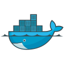
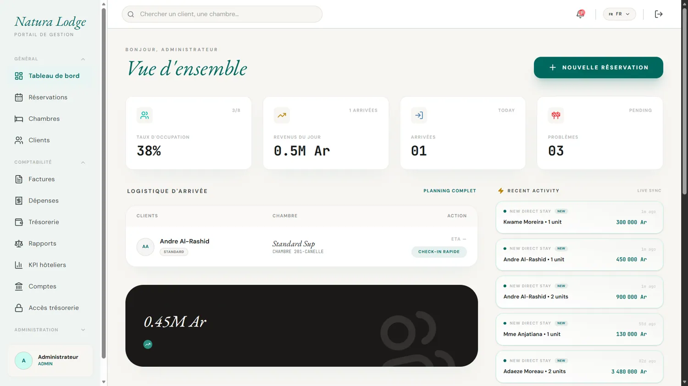
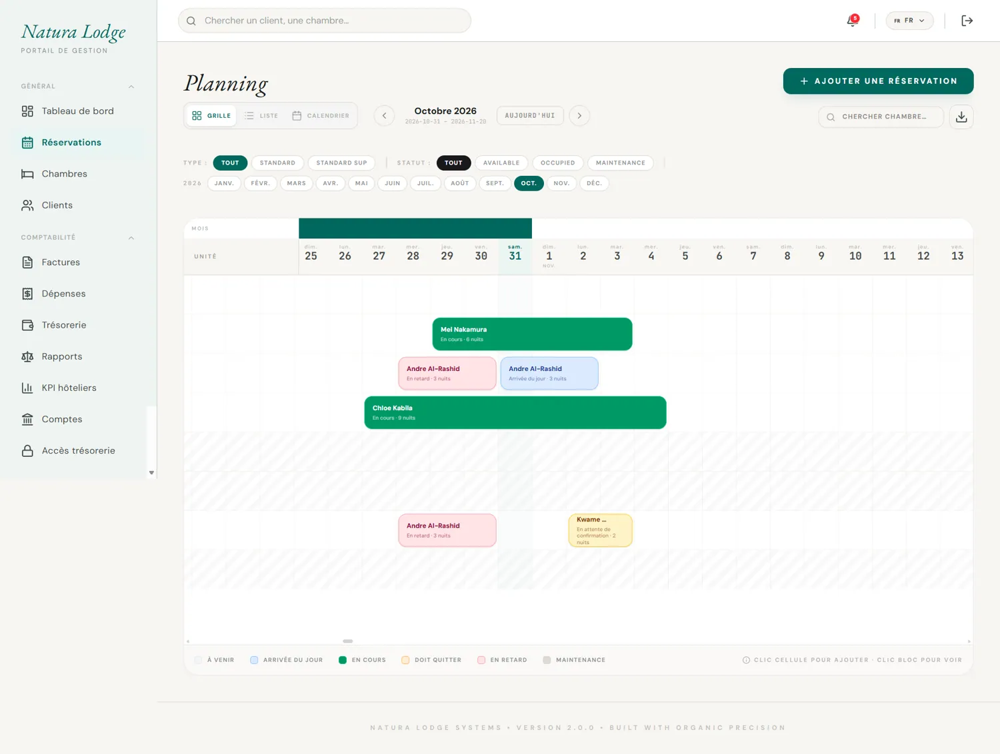
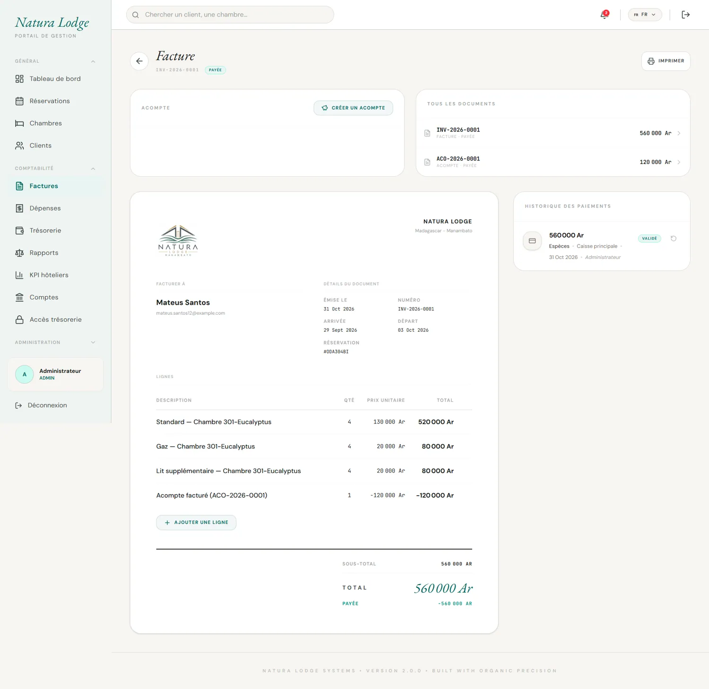
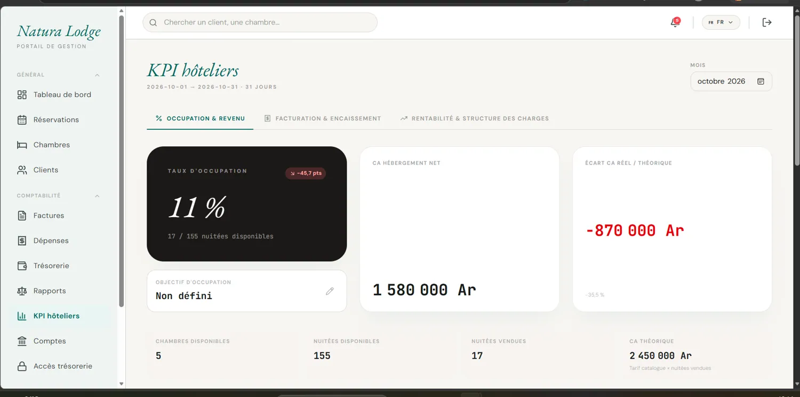

NaturaLodge
Application de gestion hôtelière

DockerContexte — Centraliser l’activité hôtelière. Les réservations, les disponibilités et les paiements doivent rester cohérents au quotidien.
Mon rôle
Développement FullStack de l’application de gestion hôtelière : interface React, API Express et accès aux données avec Prisma.
Solution & fonctionnalités
- Gestion des réservations et suivi des disponibilités des chambres
- Gestion des factures, paiements, acomptes et notes de crédit
- Suivi des opérations de caisse et des informations utiles à l'activité
- Suivi des revenus, des dépenses et des indicateurs financiers
Environnement technique
React et TypeScript pour l’interface ; Node.js, Express et Prisma pour l’API et l’accès à PostgreSQL. Docker pour conteneuriser l’application.
Point technique : gérer les règles métier liées à la facturation, notamment les différents statuts de paiement, les acomptes, les remboursements et les notes de crédit.
Résultat observable
Les quatre vues ci-dessous présentent le tableau de bord, le planning, la facturation et les indicateurs. La démo publique permet d’explorer l’application.
L’application en images




Captures de démonstration. Cliquer sur une image pour l’agrandir.